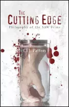
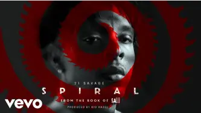

Bienvenue dans l'obscurité captivante de 'Saw' : Explorez le film, la réplique, le réalisateur, un livre et la musique
qui l'accompagne.
"Nous allons jouer à un jeu" : L'Énigme Mortelle de Jigsaw
Cette phrase iconique a marqué le début de l'horreur psychologique et du sous-genre du "torture
porn". Mais qu'est-ce qui rend cette réplique si mémorable et effrayante ?
Saw : L'Horreur Psychologique qui Hante nos Cauchemars
Sorti en 2004 et écrit par Leigh Whannel, comment l’intrigue de « Saw » a-t-elle laissé une empreinte
indélébile dans l'univers du cinéma d'horreur et de la psychologie ?
Qui est James Wan, le maestro de l’horreur moderne ?
D’insidious à Conuring, decouvrez l’histoire de James Wan, qui a su redéfinir le genre du cinéma
d’horreur en marquant toute une génération de cinéphiles passionnés de frissons.
"The Cutting Edge: Philosophy of the SAW Films" : Décryptage Philosophique de Saw

En 2013, l'auteur C.J. Patton a plongé profondément dans l'univers tordu et complexe de la franchise
"Saw".
Comment ce livre est-il devenu un incontournable du genre ?
"Spiral" de 21 Savage : Un Hymne Sombre pour le Retour de "Saw" en 2021

En 2021, 21 Savage nous avait glacé le sang à la sortie du titre Spiral pour la bande originale du
neuvième volet de la saga du même nom « Spirale : L’Héritage de Saw »